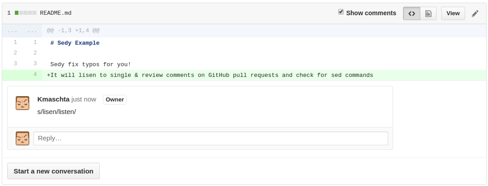
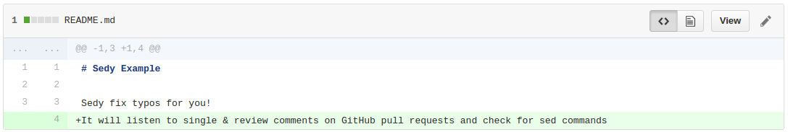

Sedy is a GitHub App, just install it on your repository and you can use it!
Install SedyWhat does it look like?
1. Comment a pull request with a sed command

2. Watch sedy do its job

3. Relax :)

How does it work?
It's just a webhook
Installing Sedy on your repository is identical to installing a webhook with the event Pull Request review.
It checks comments for sed substitution commands
Whenever a new single comment is added, or a new review is submitted, Sedy will check the comments for sed substitution syntax:
s/[TEXT TO FIND]/[REPLACEMENT]/
When it finds one, it will checkout the pull request branch, perform the sed substitution and commit the result.
Limitations
sed does far more than simple substitution, however, we currently only support the most simple one.
In time, we will add support for regular expressions, global flags, and so on.
Feel free to open an issue with your suggestions!
It's Open Source!
The project is open-source and available here on github, courtesy of Marmelab.